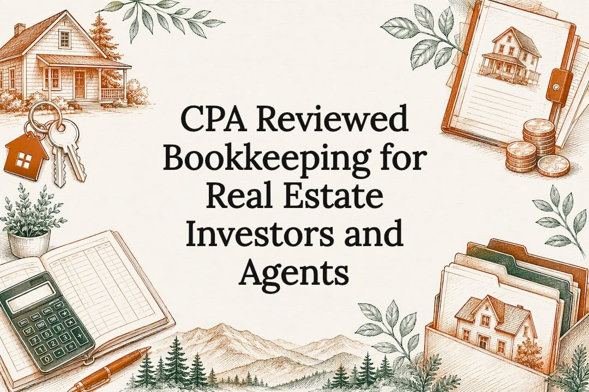

CPA Reviewed Bookkeeping for Real Estate Investors and Agents

Real estate bookkeeping gives you tax ready, property level numbers every month, so you can see profit by property and avoid surprises. Done right, it means reconciled bank accounts, a clean profit and loss statement for each property, and records that hold up if you refinance or the IRS asks questions. This guide walks through the monthly checklist, what the IRS expects you to keep, and when it makes sense to hand the work to us or someone like us.
TL;DR:
- Bookkeeping volume and complexity grow with your portfolio, so build a system for property level reporting from the start.
- A good system imports transactions automatically, tags each one to a property, captures receipts, and keeps depreciation and loan schedules.
- Keep receipts, bank statements, closing statements, Form 1098, and contractor 1099s for every property, stored so you can pull a legible copy of any of them.
- Each month, match and categorize transactions, reconcile every account, and produce a profit and loss statement by property and for the whole portfolio.
- Outsource once reconciliation eats hours or a lender or investor wants reports fast, and ask any provider about CPA review and property level reporting.
Table of Contents
- Who real estate bookkeeping serves and what it covers
- What a monthly bookkeeping checklist and your reports should look like
- What the IRS expects for tax ready recordkeeping
- The bookkeeping system that actually holds up for a portfolio
- When to outsource and how to vet a real estate bookkeeper
- How Smoky Mountain CPAs approaches real estate bookkeeping
- What most bookkeeping advice gets backward
- How we can help with your rental property books
- Sources
- FAQ
Who real estate bookkeeping serves and what it covers
Bookkeeping needs look different depending on what you own and how you make money from it. A landlord with one duplex needs less structure than someone running twelve short term rentals in Sevier County. Here is how the main profiles break down:
- Long term landlords need rent tracking, expense categorization, and a clean Schedule E at tax time.
- Short term rental owners need platform payout reconciliation, occupancy tax tracking, and higher volume expense entry.
- House flippers need project level cost tracking, since each property is closer to inventory than a rental asset.
- Real estate agents need commission income tracking, often across multiple brokerages or referral splits.
- Property managers need trust accounting on top of standard bookkeeping, since client funds and business funds must never mix.
The core tasks are the same across all five: capturing income as it hits the bank, categorizing expenses correctly, reconciling every account monthly, and tracking depreciation on each asset. What changes is volume and complexity. A single rental might take an hour a month. A ten property portfolio with a mix of long term and short term units needs a system built for property level reporting from day one, not bolted on later.
In Tennessee there is no state income tax on your personal rental income, but that does not mean there is nothing to track. Properties held in an LLC are generally subject to Tennessee franchise and excise tax, and short term rentals carry sales and local occupancy tax. Clean books by property and by entity make those filings routine. Our page on bookkeeping for real estate investors covers how we handle this for East Tennessee owners.
What a monthly bookkeeping checklist and your reports should look like
Good bookkeeping follows the same sequence every month. Skipping steps is how books fall behind and stay behind.
- Import all bank and credit card transactions.
- Match receipts to transactions so every expense has backup.
- Reconcile every bank and loan account to the statement balance.
- Post rent received, by property and by unit.
- Record security deposits you plan to return as a liability, not income.
- Categorize repairs separately from capital improvements.
- Review the trial balance for anything miscategorized.
- Close the month and generate reports.
At the end of that process, you should receive a profit and loss statement for each property, a consolidated profit and loss statement across your portfolio, a cash flow summary, a reconciliation report showing every account tied out, and a summary of anything owed to you or by you. If your bookkeeper cannot produce all five without extra requests, the process is not finished.
Pro Tip: A repair keeps a property in its current condition and is usually deductible now. An improvement that betters the property, restores it, or adapts it to a new use gets capitalized and depreciated over time. Track loan amortization separately too, since you deduct the interest on a rental mortgage, not the principal.
What the IRS expects for tax ready recordkeeping
The IRS does not require a specific bookkeeping system, but it does require records that back up every number on your return. Rental real estate is generally reported on Schedule E, with a separate column for each property. The Schedule E instructions say that if you provide significant services to renters, such as maid service, the activity goes on Schedule C instead. Heat and light, cleaning of public areas, and trash collection do not count as significant services.
Keep these on hand for every property:
- Receipts and invoices for repairs, improvements, and supplies.
- Canceled checks and bank statements.
- Closing statements from purchase and sale.
- Form 1098 showing mortgage interest paid.
- The records behind your depreciation schedule and the Form 4562 you file.
- 1099s issued to contractors you paid for property work.
A double entry system with consistent property tagging is what turns a shoebox of receipts into a property level P&L every month, rather than a scramble every April. The IRS says to keep records as long as they are needed to prove the income or deductions on a return, and to keep property records until the period of limitations expires for the year you sell or dispose of the property. Scanned records are fine as long as you can pull up a complete, legible copy when you need it.
The bookkeeping system that actually holds up for a portfolio
A single entry system, essentially a checkbook register, works for one property if you are patient. It falls apart once you own more than two or three, because it cannot show you profit by property without manual work every time. Double entry bookkeeping tracks both sides of every transaction and is what makes property level and consolidated reporting possible without rebuilding spreadsheets each month.
Whatever system you use, look for these features:
- Bank feeds that pull transactions automatically instead of manual entry.
- Property or class tagging so every transaction rolls up to the right asset.
- Receipt capture tied to each transaction for backup.
- Multi entity consolidation if you hold properties in separate LLCs.
- Depreciation and loan amortization schedules, built in or kept alongside.
Set naming conventions early, keep receipts organized by property and month, and test that your electronic storage actually produces a legible document when you pull an old file. An organized system you built yourself is worth more at tax time than a folder of paper receipts you cannot find.
When to outsource and how to vet a real estate bookkeeper
Three signs it is time to hand off the books: you have grown past two or three properties, you are spending hours on reconciliation instead of finding your next deal, or a lender or investor has asked for reports you cannot produce quickly. Books that have gone unreconciled for months are the clearest signal of all.
When you evaluate a provider, ask about:
- How often a CPA actually reviews the books, not just a bookkeeper.
- Whether reports are broken out by property, not just combined.
- What their catch up process looks like if your books are already behind.
Pro Tip: Watch for vague answers about reporting frequency. A provider who cannot tell you exactly what you will receive each month and when is not ready to take on a portfolio. Our rental property bookkeeping checklist is a useful way to compare what you are getting against what you should expect.
How Smoky Mountain CPAs approaches real estate bookkeeping
We are a two CPA firm in Knoxville, Tennessee, and the CPAs who review your books are the ones you actually talk to. Every month of bookkeeping is reconciled to the statement and reviewed by a CPA, and we use Profit First to set cash aside for taxes and owner pay. If your books are behind, we get them current first and then move you to monthly service.
What most bookkeeping advice gets backward
Most advice on this topic leads with software. Pick the right app, connect the right integrations, and the numbers take care of themselves. That gets the order wrong. A well chosen tool with sloppy categorization still produces a Schedule E that misstates your depreciation or counts a security deposit as rental income. The tool does not fix the judgment calls.
What actually protects you is the discipline behind the numbers: reconciling every month without exception, knowing the difference between a repair and a capital improvement before you record it, and having someone who understands real estate review the result before you file. Software makes that discipline easier to keep. It does not replace it.
If you take one thing from this guide, let it be this: fix your categorization habits before you shop for a new system. Clean habits on a basic tool beat messy habits on an expensive one.
How we can help with your rental property books
If your properties are past the shoebox stage, we handle monthly CPA reviewed bookkeeping, catch up work for books that have fallen behind, Profit First cash management, and tax preparation.

- Monthly bookkeeping reviewed by a CPA, broken out property by property.
- Catch up bookkeeping to get behind books current before we start monthly service.
- Profit First advisory to keep cash for taxes and owner pay separate from operating funds.
- Business and personal tax returns, including Schedule E, prepared by the same firm that keeps your books.
We quote a flat monthly fee after we look at your books. Book a free call and we will tell you what we see.
Sources
- Publication 527 (Residential Rental Property) | Internal Revenue Service
- 2025 Instructions for Schedule E (Form 1040) | Internal Revenue Service
- Recordkeeping | Internal Revenue Service
- How long should I keep records? | Internal Revenue Service
- Tips on rental real estate income, deductions and recordkeeping | Internal Revenue Service
- Franchise and Excise Tax | Tennessee Department of Revenue
FAQ
What is a real estate bookkeeper?
A real estate bookkeeper tracks rental income, expenses, and reconciliations for each property you own, producing reports that support your tax return and any lender or investor request. Some bookkeepers work under CPA review, which adds a check on categorization and depreciation before anything is filed.
Is AI replacing bookkeepers?
AI tools can speed up transaction categorization and bank matching, but judgment calls like telling a repair from a capital improvement or applying depreciation rules correctly still need a person who understands real estate accounting. That is why we keep CPA review on every month of bookkeeping, even as the software improves.
How long should I keep rental property records?
The IRS says to keep records as long as they are needed to support items on your return. For property, that means keeping purchase, improvement, and depreciation records until the period of limitations expires for the year you sell or otherwise dispose of the property, since they determine your basis and your gain or loss on the sale.
Recommended
This article is general information, not tax, legal or accounting advice for your situation. Tax rules change. Talk to a CPA about your own facts before acting. Smoky Mountain CPAs, Knoxville, Tennessee.
Want a CPA to look at your numbers?
Book a free 30 minute call. We will walk through your books and tell you what we see.